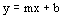

Signal Characterizer function block execution
For any given input value, the Signal Characterizer function block determines where the input lies in CURVE_X and calculates the slope of that segment using the point-slope method:

where
m = slope of the line
b = y-intercept of the line.
Using this formula, the block derives an output value that corresponds to the input. When the input lies beyond the range configured in CURVE_X, the output is clamped to the corresponding limit in the CURVE_Y array.
CURVE_X
The CURVE_X values must be defined in ascending order. The X1 element must be the smallest value, and each following X value must be greater than the previous X value. When the X values are not configured in ascending order, a block configuration error is set and the last X value that is greater than or equal to the previous one is used as the curve endpoint.
The following diagram shows an example of a valid X value configuration:
The following diagram shows an example of an invalid X value configuration:
This curve has an invalid definition because X3 is greater than X4. Between these points, the Y value is undefined because it can be any value from Y3 to Y4. In this configuration, the X3,Y3 pair becomes the endpoint for the curve definition. To use the X4,Y4 pair, you must designate X4 to be greater than or equal to X3.
SWAP_2
SWAP_2 has two possible values:
Normal
Change X by Y axis on IN_2
When SWAP_2 is Normal, IN_1 and IN_2 reference CURVE_X values and OUT_1 and OUT_2 reference CURVE_Y values.
When SWAP_2 is Change X by Y axis on IN_2, IN_2 references the CURVE_Y values and OUT_2 references the CURVE_X values (the X and Y axes are swapped for IN_2 and OUT_2). In addition, the IN_2 units change to Y units and the OUT_2 units change to X units. If the configured CURVE_Y values do not increase from value to value, the block sets a configuration error.
The following example shows an example configuration of CURVE_X and CURVE_Y:
When SWAP_2 is Change X by Y axis on IN_2, the curve an invalid definition and a configuration error results because Y3 is less than Y2. The X2,Y2 pair becomes the endpoint for the swapped curve definition when processing IN_2. Note that the X4,Y4 pair is the valid endpoint when processing IN_1.
Block Errors